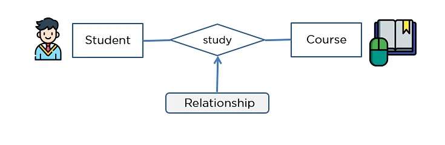

Relationship : Relationship when define entites then those entites are having some relationship with other entites .The diamond shape showcases a relationship in the ER diagram.It depicts the relationship between two entities.
Example : In the example below, both the student and the course are entities, and study is the relationship between them.
1. One-to-One Relationship : One-to-One Relationship When a single element of an entity is associated with a single element of another entity, it is called a one-to-one relationship.
Example : A student has only one identification card and an identification card is given to one person.
2. One to Many Relationship : One to Many Relationship When a single instance of an entity is associated with more than one instances of another entity then it is called one to many relationship.
Example : A customer can place many orders but a order cannot be placed by many customers.

3. Many-to-One Relationship : Many-to-One Relationship When more than one element of an entity is related to a single element of another entity, then it is called a many-to-one relationship.
Example : students have to opt for a single course, but a course can have many students.

4. Many-to-Many Relationship : Many-to-Many Relationship When more than one element of an entity is associated with more than one element of another entity, this is called a many-to-many relationship.
Example : you can assign an employee to many projects and a project can have many employees.